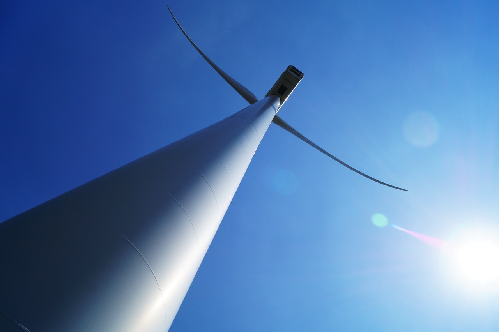

INDUSTRIES
Our products are applicable to numerous sectors; a few of them are described below.AEROSPACE
The aerospace industry has innumerous challenges such as optimising MRO (Maintenance, Repair and Operations) for costs and time without any compromise to safety. The costs of lifecycle engineering impacts all the industry players, from airlines, OEMs, MROs and lessors and the complexity of the supply chain alongside the engineering adds to the challenges. Reducing downtime and costs is in everyone’s interests.
PORTRAIT enables all the players in the industry to automate many of the critical processes involved in the supply chain, for example:
- Automation and support of human operators in the MRO operations such as engine borescope inspections, nacelle checks and airframe supervisory analytics. This provides a ‘second pair of eyes’, digitisation and speeding up of recording and sharing processes across the supply chain.
- Analysing the impact of factors such as weather and pilot actions on predicting engine lifetime and maintenance both for single assets and across the fleet.
- Analysis to predict and maintain asset values for lessors and lessees alike.
ENERGY

Energy assets are critical and invariably deployed and operated in harsh conditions. Many have rotating parts such as generators, turbines, wind and otherwise. Others are capital assets such as power plants, solar panels and others where downtime is not only extremely costly, but has other implications such as safety. Optimising the maintenance and operations of these assets optimally is therefore crucial, and it affects all the players in the industry from OEMs, operators and financiers alike.
Portrait can help OEMs and operators with many of these challenges, for example:
- Automation and support of human operators in the MRO operations such as when and how to perform inspections, checks and supervisory analytics, and when and how to maintain assets.
- Analysing the impact of factors such as operating conditions and even weather on asset lifetime and maintenance both for single assets and across fleets of assets.
- Analysis to predict and maintain asset values for lessors and lessees alike.
- Ability to refine predictions by adding heterogeneous IoT (Internet of Things) data from sensors, videos and other rich data sources.
MANUFACTURING & DESIGN
The manufacturing sector is dependent on digital twins for the entire product lifecycle - for design, manufacturing and maintenance. The current generation of digital twins addresses many of these challenges across the supply chain. However current digital twins all inherently lack the ability to understand their own uncertainty and therefore they are susceptible to tolerance drift or the impact of new, unforeseen factors. This is due to being deterministic rather than probabilistic.
By using Bayesian AI techniques, Portrait can help OEMs and operators with many of these challenges, including:
- Explanations of why the real performance of products may not match the simulated, predicted performance in certain situations. This helps inform and improve the design as well as the manufacturing and assembly of the products.
- Providing more accurate simulations, and predictions that update as new conditions are observed.
- Ability to refine predictions by adding heterogeneous IoT (Internet of Things) data from sensors, videos and other rich data sources.
TRANSPORTATION & LOGISTICS
Running fleets of vehicles - be they ships, trains, trucks, cars or aircraft - has many significant challenges. There is issues to do with specific vehicles that then can turn into issues across the fleet, as well as fleet-wide optimization as well. Different vehicles which are operated in different conditions will have differences in the way they require maintenance and impacting on their lifecycle. Simulating this is notoriously difficult given that these differences in conditions may not be measured.
By using Bayesian AI techniques, PORTRAIT can help OEMs and operators with many of these challenges, including:
- Automation and support of human operators in the MRO operations such as when and how to perform inspections, checks and supervisory analytics, and when and how to maintain assets.
- Analysing the impact of factors such as operating conditions and even weather on asset lifetime and maintenance both for single assets and across fleets of assets.
- Analysis to predict and maintain asset values for lessors and lessees alike Providing more accurate simulations, and predictions that update as new conditions are observed.
CIVIL ENGINEERING
The built environment contains many complex assets that are expensive to build, maintain and operate, as well as critical to keep running and with critical safety issues. These include buildings as well as roads, railways, bridges and infrastructure.
By using Bayesian AI techniques, PORTRAIT can help OEMs and operators with many of these challenges, including:
- Explanations of why the real performance of buildings may not match the simulated, predicted performance in certain situations. This helps inform and improve the design as well as the manufacturing and assembly of the products.
- Optimising and predicting the maintenance of these assets.
- Providing more accurate simulations, and predictions that update as new conditions are observed.
- Ability to refine predictions by adding heterogeneous IoT (Internet of Things) data from sensors, videos and other rich data sources.